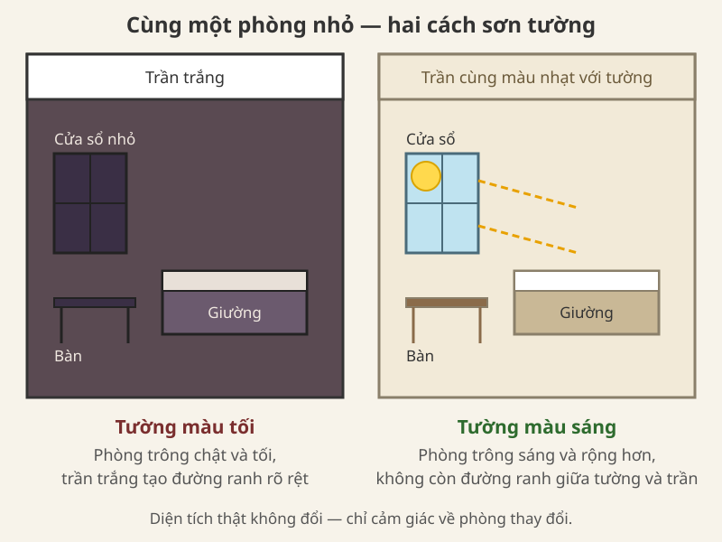

Dùng màu sơn và giấy dán tường để phòng nhỏ trông rộng hơn
Tác giả: Ruler
Một căn phòng nhỏ có thể đổi cảm giác rất nhiều chỉ nhờ màu của bốn bức tường, dù diện tích thật không đổi một phân nào. Sơn lại tường là cách nhanh nhất để thay đổi cảm giác về một căn phòng.
Bài này chỉ đi vào việc chọn màu sơn và giấy dán tường để căn phòng nhỏ trông rộng, sáng và cao hơn trong cảm nhận. Cây cảnh trong nhà và hoa tươi để bàn không nằm trong phạm vi bài này. Còn cách treo tranh lên mảng tường vừa sơn xong thì bạn xem hướng dẫn treo an toàn trong Bài 1 và Bài 4, bài này không nhắc lại. Mọi hiệu quả nói trong bài đều là cảm giác thị giác — diện tích thật của phòng không đổi.
Vì sao màu sáng làm phòng trông rộng hơn
Khi ánh sáng chiếu vào tường đã sơn, một phần bật trở lại vào phòng, phần còn lại bị mặt tường hút mất. Màu sáng trả lại nhiều ánh sáng hơn, màu tối hút mất nhiều hơn, nên tường sáng trông như lùi xa hơn, còn tường tối trông như tiến lại gần hơn.
Cách nói này có một con số đi kèm, gọi là chỉ số phản xạ ánh sáng, viết tắt là LRV, đo trên thang từ 0 tới 100. Theo hướng dẫn của Fresh Coat Painters, màu trắng có LRV khoảng 85 sẽ phản xạ khoảng 85 phần trăm ánh sáng chiếu tới nó, còn màu than chì đậm có LRV khoảng 5 sẽ hấp thụ khoảng 95 phần trăm ánh sáng. Trong phòng nhỏ, sự chênh lệch đó nhìn thấy rõ: màu trắng có LRV cao làm ranh giới phòng mờ đi và có cảm giác mở rộng, còn màu than chì đậm làm ranh giới rõ nét và kéo các bức tường lại gần người nhìn.
Sơn satin phản xạ ánh sáng tốt hơn sơn mờ, nhưng sơn bóng loáng lộ rõ vết vá trên tường cũ nên bạn nên tránh.
Chọn màu tường sáng theo ánh sáng trong phòng
Không có một màu nào hợp với mọi phòng nhỏ, vì mỗi phòng nhận ánh sáng khác nhau.
Phòng nhiều nắng, sáng cả ngày, hợp với màu trắng ấm và màu trắng ngà. Theo hướng dẫn của Fresh Coat Painters, các màu trắng ấm có LRV ở khoảng 80, nghĩa là chúng phản xạ phần lớn ánh sáng có trong phòng, và hơi ấm trong sắc độ giúp phòng không có cảm giác lạnh lẽo hay khô cứng như trắng tinh.
Phòng có cửa sổ nhưng ánh sáng yếu, hoặc phòng chỉ sáng nhờ đèn, hợp với màu xanh dương nhạt và màu xanh xô thơm nhạt. Theo hướng dẫn của Benjamin Moore, màu xanh nhạt "lùi lại", tạo cảm giác mở rộng không gian, và màu xanh nhạt là lựa chọn hợp với những chỗ ít sáng.
Phòng không có cửa sổ, phòng tầng hầm hoặc góc phòng khuất sáng, hợp với màu vàng nhạt và màu kem ấm. Theo hướng dẫn của Benjamin Moore, màu vàng phản xạ mạnh nên hợp với những chỗ thiếu ánh sáng tự nhiên, và màu vàng nhạt, vàng kem là lựa chọn tốt cho tường trong phòng không có cửa sổ, trong khi vàng đậm thì chỉ nên dùng cho điểm nhấn.
Sơn trần và sơn cùng màu để xóa đường ranh giới
Cách đơn giản nhất là sơn trần màu trắng sáng. Theo hướng dẫn của Benjamin Moore, với trần thấp, cách làm là kéo mắt nhìn lên trên để tạo cảm giác thoáng bằng một màu trần sáng, và màu trần sáng tạo cảm giác trần cao hơn.
Cách thứ hai là sơn trần cùng màu với tường, hoặc nhạt hơn tường một hoặc hai tông trong cùng một họ màu. Theo hướng dẫn của Fresh Coat Painters, hầu hết mọi người sơn trần màu trắng bất kể màu tường, và điều đó tạo ra một đường ngang thấy rõ ở chỗ tường kết thúc và trần bắt đầu. Sơn trần cùng màu với tường, hoặc cùng màu nhưng nhạt hơn một chút, sẽ xóa đường ranh giới đó và để mắt đi lên không bị ngắt quãng, nên phòng có cảm giác cao hơn. Cách này hiệu quả nhất với màu tường sáng.
Cách sơn cùng màu chỉ hợp với màu sáng; trần cũ nhiều vết vá nên giữ trần trắng mờ.
Tường điểm nhấn: một mảng đậm, dùng có chừng mực
Tường điểm nhấn là một mảng tường sơn đậm hơn để mắt có điểm dừng, mà không phải sơn đậm cả phòng. Bạn chỉ nên sơn điểm nhấn ở một bức tường duy nhất trong mỗi phòng.
Theo hướng dẫn của Benjamin Moore, với không gian nhỏ, bạn nên dùng một màu sáng để tạo điểm nhấn, rồi dùng màu nhạt hơn cho phần còn lại của phòng, và giữ đồ trang trí ở mức tối giản. Bạn không cần dùng màu quá đậm: nguyên tắc là chọn một bức tường, thường là bức tường bạn nhìn thấy đầu tiên khi bước vào phòng, hoặc bức tường phía sau ghế ngồi, và sơn nó đậm hơn các bức tường còn lại một vài tông.
Sọc dọc và sọc ngang: kéo mắt lên cao hay sang hai bên
Sọc là cách dùng sơn hoặc giấy dán tường để điều khiển hướng nhìn của mắt. Mắt người có xu hướng đi theo đường sọc, nên sọc dọc kéo mắt lên cao, còn sọc ngang kéo mắt sang hai bên. Bạn chọn hướng sọc theo đúng vấn đề của phòng mình: trần thấp thì cần sọc dọc, phòng hẹp và dài thì cần sọc ngang.
Với trần thấp, sọc dọc là lựa chọn trực tiếp nhất. Theo hướng dẫn của Livingetc, kéo sọc dọc lên tường sẽ tạo cảm giác cao hơn cho căn phòng, ngay cả khi trần thấp. Nhà thiết kế Sarah Randolph, được nguồn này trích dẫn, cũng gợi ý kéo sọc lên tới trần. Bạn nên để sọc chạy liền mạch từ chân tường lên tới trần, không để phào chỉ dày hay đường viền ngang cắt ngang dòng sọc.
Với phòng hẹp và dài, như hành lang trong nhà hoặc phòng trọ dài, sọc ngang là lựa chọn hợp hơn. Theo cùng nguồn trên, dán sọc ngang sẽ làm phòng trông rộng hơn về mặt thị giác, và với sọc ngang, nhà thiết kế được trích dẫn gợi ý dùng sọc dày và rõ nét hơn là sọc mảnh. Bạn nên dán sọc ngang ở bức tường dài nhất của phòng hẹp.
Giấy dán tường: họa tiết nhỏ, khoảng trống và một mảng tường
Giấy dán tường khác sơn ở chỗ nó mang họa tiết. Họa tiết có thể giúp phòng nhỏ trông rộng hơn, nhưng cũng có thể làm phòng nhỏ trông chật hơn nếu chọn sai. Nguyên tắc chọn họa tiết cho phòng nhỏ gói gọn trong ba ý: họa tiết nhỏ hoặc vừa, có nhiều khoảng trống, và chỉ dán một mảng tường.
Về kích thước họa tiết, có hai hướng đều được các nhà thiết kế nhắc tới. Theo hướng dẫn của Livingetc, họa tiết lớn có thể làm đồ đạc xung quanh trông nhỏ lại theo tỉ lệ, nên phòng có cảm giác rộng hơn theo cách so sánh; nhưng cùng nguồn này cũng lưu ý rằng họa tiết nhỏ vẫn dùng được trong phòng nhỏ, miễn là có đủ khoảng trống. Người mới nên nhớ: họa tiết lớn chỉ dùng cho một mảng tường, họa tiết nhỏ cần nền sáng và nhiều khoảng trống.
Về màu sắc của giấy, nguyên tắc giống như sơn: màu sáng và màu lạnh nhạt có lợi hơn khi phòng chật. Theo hướng dẫn của Livingetc, màu sáng luôn có lợi khi không gian chật, và màu lạnh nhạt tạo cảm giác về khoảng cách.
Về số lượng tường dán giấy, bạn nên giữ quy tắc một mảng tường trong phòng nhỏ. Theo hướng dẫn về giấy dán tường cho người thuê nhà của Honey and Home Style, trong phòng dưới 150 feet vuông, khoảng 14 mét vuông, bức tường giấy thứ hai sẽ không còn cảm giác ấm cúng mà bắt đầu có cảm giác chật chội.
Giấy dán tường bóc dán: lựa chọn cho người thuê nhà
Với người thuê nhà, giấy dán tường truyền thống dán bằng keo ướt là lựa chọn rủi ro, vì lúc gỡ ra nó có thể kéo theo lớp sơn tường và làm bạn mất tiền cọc. Giấy dán tường bóc dán, còn gọi là giấy peel-and-stick, là lựa chọn hợp hơn: nó dán như một miếng dán lớn, và được thiết kế để bóc ra mà không cần cạo.
Bạn nên hiểu đúng chữ "bóc ra được" trước khi mua. Theo hướng dẫn của Honey and Home Style, chữ này chỉ đúng khi bạn chọn đúng loại giấy, thử trên tường của mình, dán đúng cách và gỡ chậm rãi; không phải cuộn giấy bóc dán nào cũng an toàn cho nhà thuê. Nguồn này nêu ba điều kiện để một cuộn giấy được coi là thân thiện với người thuê: keo dán phải là loại keo có độ bám thấp và ghi rõ "removable" hoặc "clean removal", tránh loại ghi "permanent adhesive" hoặc keo bám mạnh; giấy phải bóc sạch khỏi lớp sơn tường của chính bạn, vì sơn tường nhà thuê có thể là sơn mờ, sơn cũ hoặc sơn chưa bám chắc.
Bạn nên thử mẫu giấy trước khi dán cả bức tường. Theo cùng nguồn trên, bạn cắt một miếng giấy khoảng 25 cm vuông, dán vào một chỗ khuất như sau cánh cửa hoặc trong tủ quần áo, để đó 48 giờ trên tường phẳng, hoặc để cả một tuần trên tường sơn mờ hay tường có bề mặt không phẳng, rồi bóc ra chậm rãi theo góc thấp. Nếu giấy bóc ra sạch, bạn mới dán tiếp. Bạn cũng nên hỏi chủ nhà về thời điểm tường được sơn lần cuối, vì theo cùng nguồn trên, sơn tường cần ít nhất 30 ngày để khô hẳn trước khi dán giấy bóc dán.
Người thuê nhà: hỏi chủ nhà và đọc hợp đồng trước khi sơn hoặc dán
Sơn lại tường và dán giấy dán tường đều là việc chạm trực tiếp vào tường nhà, nên với người thuê nhà, đây là việc cần hỏi trước, không phải việc làm trước rồi hỏi sau. Cách làm an toàn nhất đã có trong Bài 4: bạn đọc lại hợp đồng thuê, xem điều khoản nào nói về việc sơn, dán hay thay đổi tường, rồi nhắn cho chủ nhà một tin ngắn, nói rõ bạn định sơn màu gì hoặc dán giấy ở mảng tường nào, và cam kết sẽ trả lại tường như cũ khi dọn đi. Bạn nên lưu lại tin nhắn chủ nhà đã đồng ý, để khi trả phòng còn có thứ chứng minh bạn đã hỏi trước.
Bạn nên lưu ý rằng sơn lại tường khó trả về hiện trạng hơn dán giấy bóc dán rất nhiều. Giấy bóc dán gỡ ra là xong, còn tường đã sơn lại thì bạn phải sơn trả lại đúng màu cũ, và màu sơn mới mua rất khó trùng hoàn toàn với màu sơn cũ đã phai theo thời gian. Vì vậy, nếu hợp đồng thuê cấm sơn tường, bạn nên dùng giấy dán tường bóc dán hoặc chỉ dán giấy lên tấm bìa đặt dựa tường, thay vì cố sơn lại. Nếu chủ nhà đồng ý cho sơn, bạn nên hỏi luôn ba việc: bạn được sơn màu nào, bạn có phải sơn trả lại màu cũ khi dọn đi không, và ai chịu tiền sơn.
Sơn trong phòng kín: mở cửa sổ và đeo khẩu trang
Sơn trong nhà tạo ra mùi sơn và hơi dung môi, nên bạn cần lo thông gió trước khi lo màu sơn. Trước khi mở nắp sơn, bạn mở hết cửa sổ của phòng và bật quạt hướng ra ngoài để không khí lưu thông, và giữ thông gió như vậy trong lúc sơn lẫn lúc sơn khô. Nếu phòng kín, ít cửa sổ, bạn nên đeo khẩu trang khi sơn, vì hít mùi sơn lâu trong không khí tù đọng sẽ gây khó chịu, đau đầu. Bạn cũng không nên ngủ trong phòng vừa sơn xong trong đêm sơn đầu tiên — hãy để phòng thông thoáng qua đêm rồi mới dọn vào ở. Đây là hướng dẫn an toàn chung khi sơn trong nhà, không phải quy định của một hãng sơn cụ thể.
Trình tự làm thử trong một phòng
Bạn không cần sơn cả phòng ngay trong ngày đầu tiên. Bảng dưới đây tự tổng hợp từ các nguyên tắc trong bài, để bạn chọn việc làm đầu tiên theo đúng vấn đề của phòng mình:
| Vấn đề của phòng | Việc làm đầu tiên | Vì sao chọn việc này |
|---|---|---|
| Phòng tối, ít ánh sáng | Sơn tường màu vàng nhạt hoặc kem ấm | Màu vàng nhạt phản xạ mạnh, tạo cảm giác có nắng |
| Trần thấp | Sơn trần trắng sáng, hoặc sơn trần cùng màu nhạt với tường | Xóa đường ranh giới giữa tường và trần, mắt đi lên không bị ngắt |
| Phòng hẹp và dài | Dán sọc ngang ở bức tường dài nhất, hoặc sơn một mảng tường cuối đậm hơn | Kéo mắt sang hai bên, hoặc kéo mắt về phía cuối phòng để tạo chiều sâu |
| Phòng vuông nhỏ, tường trống | Dán giấy họa tiết nhỏ lên một mảng tường duy nhất | Một mảng họa tiết làm điểm nhấn, các tường còn lại sơn nhạt làm nền |
| Nhà thuê, không được sơn | Dán giấy bóc dán lên một mảng tường sau khi thử mẫu | Đổi được màu tường mà không cần sơn, gỡ ra được khi trả phòng |
Riêng mẹo sơn mảng tường cuối phòng đậm hơn trong bảng trên chỉ là gợi ý sắp xếp theo cảm nhận, chưa đo thực tế — bạn thử trên một mảng nhỏ trước rồi mới quyết định làm cả bức tường.
Sau khi chọn được việc đầu tiên, bạn làm theo trình tự ba bước: thử màu trên một mảng nhỏ và sống cùng nó vài ngày; làm xong một bức tường rồi dừng lại, nhìn cả phòng vào buổi sáng và buổi tối trước khi làm bức tường tiếp theo; và chỉ khi bạn hài lòng với bức tường đầu tiên mới làm tiếp. Trình tự này tốn thêm vài ngày, và thời gian vài ngày này chỉ là ước chừng của người viết, không phải quy định cố định.
Những lỗi hay gặp khi sơn và dán giấy cho phòng nhỏ
Lỗi đầu tiên là sơn cả phòng màu trắng tinh mà không thử dưới ánh sáng thật. Trắng tinh trong phòng thiếu nắng có thể trông xám và lạnh, còn trong phòng nhiều nắng có thể chói và lộ rõ vết tường cũ. Bạn nên chọn trắng ấm hoặc trắng ngà, và thử mẫu trên tường trước khi sơn cả phòng.
Lỗi thứ hai là dán giấy bóc dán lên tường chưa thử mẫu, hoặc dán lên sơn tường vừa sơn xong chưa đủ 30 ngày. Giấy dán lên tường chưa sẵn sàng có thể kéo sơn bong ra khi gỡ, và bạn sẽ phải trả tiền sửa tường khi dọn đi.
Lỗi thứ ba là sơn trong phòng đóng kín cửa rồi ngủ lại ngay trong đêm đó. Bạn nên mở cửa sổ và bật quạt trong lúc sơn và lúc sơn khô, đeo khẩu trang khi phòng kín, và để phòng thông thoáng qua đêm trước khi dọn vào ở.
Kết luận
Nói gọn lại, phòng nhỏ trông rộng hơn nhờ ba quyết định: màu tường sáng đúng với ánh sáng thật của phòng; trần sáng hoặc cùng màu nhạt với tường để mắt không bị chặn ở đường ranh giới; và chỉ một điểm nhấn duy nhất, dù là mảng sơn đậm hay mảng giấy họa tiết. Bạn thử trên một mảng nhỏ trước, sống cùng nó vài ngày, rồi mới làm tiếp — phòng sẽ sáng hơn, cao hơn và thoáng hơn mà không cần đập tường hay mua thêm đồ mới.
Nguồn tham khảo
- Benjamin Moore, "5 Colors That Make Rooms Look Bigger & Brighter" — dùng cho các khẳng định: màu sơn nhạt như trắng ngà, màu trung tính nhạt, màu pastel tạo cảm giác phòng lớn và sáng hơn; màu xanh nhạt lùi xa, tạo cảm giác mở rộng không gian, màu xanh nhạt hợp với chỗ ít sáng; phòng không có nhiều ánh sáng tự nhiên nên dùng trắng sạch có sắc độ ấm; dùng một màu sáng làm điểm nhấn rồi dùng màu nhạt hơn cho phần còn lại, giữ đồ trang trí tối giản; màu vàng phản xạ mạnh, hợp với chỗ thiếu ánh sáng tự nhiên, vàng đậm để dành cho điểm nhấn, vàng nhạt và vàng kem hợp với tường; với trần thấp, dùng màu trần sáng để kéo mắt lên trên, tạo cảm giác trần cao hơn (truy cập 23/11/2026): https://www.benjaminmoore.com/en-us/project-ideas-inspiration/interiors/make-small-room-look-bigger-brighter
- Fresh Coat Painters, "Paint Colors That Make a Room Look Bigger" — dùng cho các khẳng định: chỉ số phản xạ ánh sáng LRV đo trên thang 0 tới 100, màu trắng có LRV khoảng 85 phản xạ khoảng 85 phần trăm ánh sáng, màu than chì đậm có LRV khoảng 5 hấp thụ khoảng 95 phần trăm ánh sáng; màu trắng có LRV cao làm ranh giới phòng mờ đi, màu tối làm ranh giới rõ và kéo tường lại gần; sơn satin phản xạ ánh sáng tốt hơn sơn mờ; màu trắng ấm có LRV ở khoảng 80; sơn cả tường và trần cùng một màu trắng ấm xóa ranh giới giữa hai mặt phẳng, mắt đi lên không bị ngắt, phòng có cảm giác cao hơn; màu vàng nhạt phản xạ mạnh, hợp với phòng thiếu sáng (truy cập 23/11/2026): https://freshcoatpainters.com/resources/blog/south-denver/paint-colors-that-make-a-room-look-bigger/
- Livingetc, "9 Ways to Make a Room Look Bigger With Wallpaper" — dùng cho các khẳng định: sọc dọc kéo lên tường tạo cảm giác cao hơn ngay cả khi trần thấp, dán sọc ngang làm phòng trông rộng hơn, sọc ngang nên dùng sọc dày rõ nét hơn sọc mảnh; họa tiết lớn làm đồ đạc xung quanh trông nhỏ lại theo tỉ lệ, họa tiết nhỏ vẫn dùng được trong phòng nhỏ nếu có đủ khoảng trống; màu sáng và màu lạnh nhạt tạo cảm giác về khoảng cách (truy cập 23/11/2026): https://www.livingetc.com/advice/wallpaper-to-make-room-look-bigger
- Honey and Home Style, "Renter Friendly Wallpaper: Will It Ruin Your Walls?" — dùng cho các khẳng định: giấy bóc dán chỉ bóc sạch khi chọn đúng loại giấy, thử trên tường của mình, dán đúng cách và gỡ chậm rãi; giấy thân thiện với người thuê cần keo bám thấp ghi rõ "removable" hoặc "clean removal", tránh keo vĩnh viễn hoặc keo bám mạnh; giấy phải bóc sạch khỏi lớp sơn tường của chính bạn; sơn mờ bám keo chặt hơn nên cần thử mẫu; trong phòng dưới 150 feet vuông, bức tường giấy thứ hai làm phòng có cảm giác chật chội; thử mẫu giấy 25 cm vuông ở chỗ khuất, để 48 giờ trên tường phẳng hoặc một tuần trên tường sơn mờ hay tường không phẳng, rồi bóc chậm theo góc thấp; sơn tường cần ít nhất 30 ngày để khô hẳn trước khi dán giấy bóc dán (truy cập 23/11/2026): https://honeyandhomestyle.com/renter-friendly-wallpaper/
Phương án ảnh

Đây là sơ đồ minh họa, không phải ảnh chụp thực hành